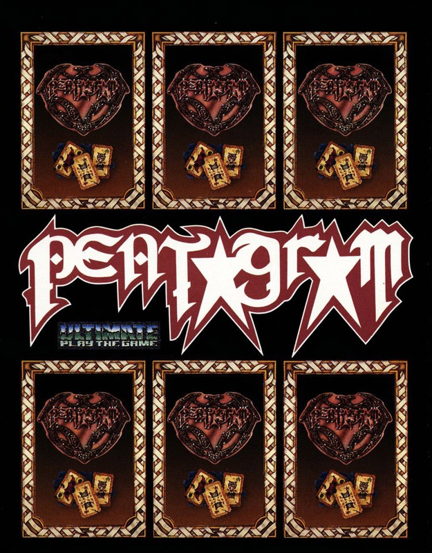
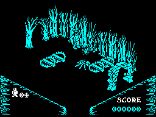

Pentagram


{kind=link}

| Publisher: | Ultimate Play the Game |
| Price: | £9.95 |
| Year: | 1986 |
| Source: | CRASH, Issue 29 |

Sabreman is back! After escaping from Underwurlde via one exit which took him into Knight Lore and problems with a spot of lycanthropy (LMLWD), he can now set out on the quest for the PENTAGRAM.
Leaving Underwurlde, Sabreman pauses only to snatch up a copy of the Grand Arch Wizardry spell book before stomping off into the forest. No pith helmet for Sabreman this time — he scampers round in a hooded cloak, and can defend himself by hurling sparkling balls of magical energy.
And defend himself he must, for the forest is inhabited by a variety of unpleasant creatures that have a habit of suddenly materialising at just the wrong moment. Witches riding broomsticks and sleepwalking zombies can be zapped with a quick burst of magic, but their touch, like that of the unzappable spider creatures, is deadly. Sabreman only has a stock of five lives to hand, so care needs to be taken when killer nasties are in the vicinity.

best at. Crumbling. Sabreman
leaps through the air on his way
to another part of the location
Other manifestations, including ghosts, giant lice and amorphous blobs also turn up in the game from time to time, but they are not deadly — just a nuisance, making life more difficult. They, too, can be despatched with a bit of well-hurled magic.
As is usual with Ultimate games, the inlay doesn’t contain too many hints about the quest on which Sabreman has embarked, but it seems that sections of the PENTAGRAM must be gathered up and bathed in the waters from a well that lurks behind a wall of mantraps — runes must be found too, and then the PENTAGRAM finally becomes Sabreman’s personal possession.
The forest locations through which Sabreman passes on his quest are presented in the same 3D perspective Ultimate used in Alien 8 and Knight Lore, and the control system is also similar: the robed adventurer can only walk and jump forwards, and has to be rotated until he is facing in the appropriate direction before a move is made.
Progress through the locations is not always straightforward — sometimes sheets of spikes or mantraps block the pathway and have to be hurdled. Objects, including tables, logs and blocks of stone can be moved by shoving them or firing a blast of magic — handy, because getting through some locations is a problem in itself. Evil looking dogshead guardians patrol some of the entrances and exits, making trips between forest locations rather tricky.
A tune plays on the title screen and once the start key has been depressed, a few seconds elapse before the game begins — Sabreman doesn’t begin his adventure from the same part of the forest each time, and the objects that have to be collected aren’t always in the same location. As objects are gathered up, they appear in the left hand status area, under the little icon that represents the number of lives remaining. Each time a nasty is sent on the trip to oblivion with a blast of magic, points are added to your score, so it’s not just a matter of gathering up the fragments of the PENTAGRAM: high-score chasing is part of gameplay.
The existence of Pentagram was first alluded to in Underwurlde, and now, nearly six months after it was first advertised, it has arrived. But Sabreman’s trials and tribulations are still not over: Mire Mare and the future beckons the intrepid adventurer...
CRITICISM
“Ultimate have finally released one of the follow ups to Knight Lore and what a good follow up it is too. The graphics are of course in the Ultimate style, but people shouldn’t complain ’cos it’s a good idea and why shouldn’t they use it over and over again? Ultimate, I feel, have put in more of a range of detailed graphics than the other games, and the nasties that keep materialising are very good and add to the whole game immensely, which means that there’s no hanging about in your quest for the PENTAGRAM. I don’t think you’ll get bored with this at all. At ten pounds it presents better value for money than their other releases, and it’s a must for all arcade/adventure players.”
“Well what a long wait, but at last it’s here! Pentagram is not that different om the rest of the trilogy of 3D games: nevertheless it presents a considerable challenge to complete and map. I still think Ultimate lead the field at this sort of game, although Ocean’s Batman is perhaps the best of the rest. The scene is well set by the packaging which creates a good atmosphere. Sabreman is controlled easily and precisely with no delay, although I noticed that the action tended to slow up when there was a lot on the screen, but that’s not such a bad point — it gives you a chance to realise where everything is. Definitely another one to add to your Ultimate arcade adventure collection...”
“Ultimate’s latest offering is definitely cast in the same mould as Alien 8 and Knight Lore, and as such bound to appeal to anyone who enjoys a good romp through a maze of locations, solving puzzles along the way. The graphics are all pretty and well designed and solving the puzzle contained in the game should give even the smartest of Alecs ten pounds worth of satisfaction. It’d be nice if Ultimate came up with a totally new and different concept for the next game, though...”
COMMENTS
| Control keys: | Z, C, B, M left, X, V, N, SYM SHIFT right, second row to walk forward, Q, E, T, U, O jump W, R, Y, I, P fire, number keys to pick up/drop, CAP SHIFT, SPACE to pause |
| Joystick: | Kempston, Cursor, Interface 2 |
| Keyboard play: | No problems |
| Use of colour: | Monochromatic, hence no clashes |
| Graphics: | 3D style made famous by Knight Lore |
| Sound: | Tuneful start and finish music, plus spot effects |
| Skill levels: | One |
| Screens: | Rather a lot |
| General rating: | Sabreman fans can’t afford to miss this one! |
| Use of computer: | 94% |
| Graphics: | 95% |
| Playability: | 92% |
| Getting started: | 90% |
| Addictive qualities: | 95% |
| Value for money: | 91% |
| Overall: | 93% |